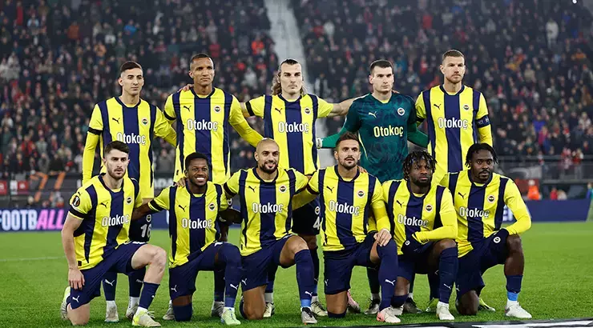

Arda Güler ile Bellingham arasında şok gerilim! 'İyi bir fırça yedi...'
Açıklama:Carlo Ancelotti yönetimindeki Real Madrid, geçtiğimiz hafta sonu cumartesi akşamı LaLiga'daki son maçta Girona'yı deplasmanda 3-0 mağlup etti. Maça ilk 11'de başlayan Fenerbahçe'nin eski yıldızı Arda Güler, sol ayağıyla güzel bir gol atarak öz güven kazandı. Öte yandan maç esnasında millî futbolcu Arda Güler ile Jude Bellingham'ın saha içinde büyük bir tartışma yaşadığı ortaya çıktı.
2-Fenerbahçe-Athletic Bilbao maçı öncesi son dakika! 3 eksik var
Açıklama:Fenerbahçe'nin Brezilyalı orta sahası Fred, Avrupa Ligi'nde tüm maçlarda forma giyerken, Slavia Prag mücadelesinde gördüğü sarı kart sonrası cezalı duruma düştü. 31 yaşındaki futbolcu, yarın oynanacak maçta sarı kart cezası nedeniyle kadroda olmayacak. Sarı-Lacivetliler'de UEFA kadrosunda olmayan Oğuz Aydın ve Kostic de maçta forma giymeyecek.
3- TOFAŞ-Anadolu Efes maç sonucu: 77-70
Açıklama:TOFAŞ, Türkiye Basketbol Ligi'nin 9'uncu haftasında evinde Anadolu Efes'i 77-70 mağlup etti.